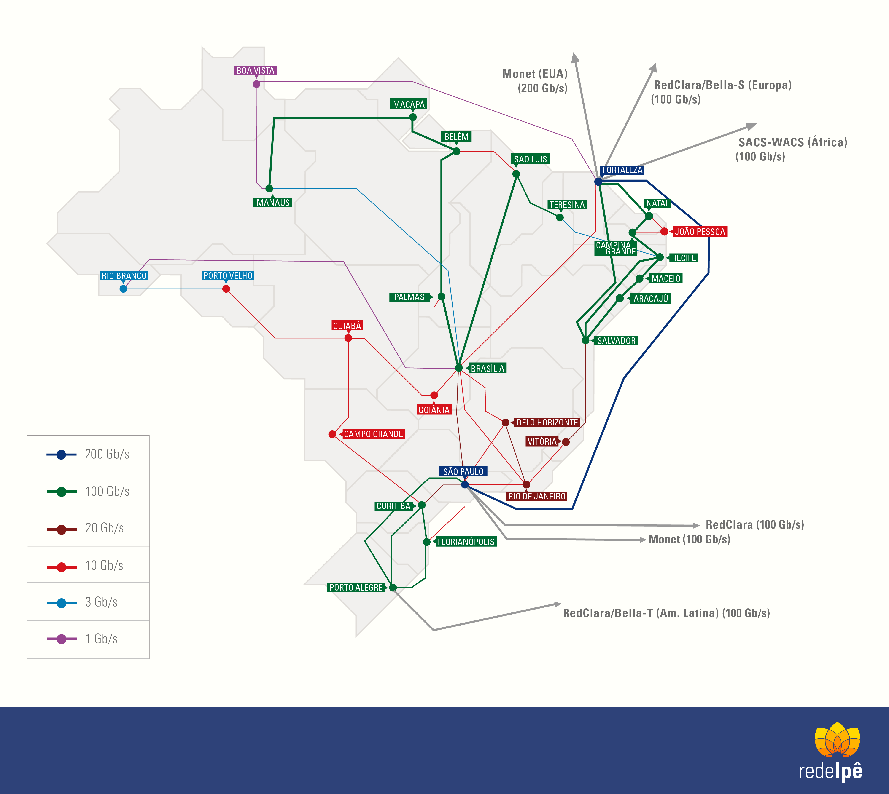

Infraestrutura Óptica no Brasil
Da chegada dos cabos intercontinentais na costa brasileira até o mapa de distribuição nacional, a expansão das redes FTTH no interior e as infovias fluviais da Amazônia.
1. Mapa da Distribuição Nacional e O Hub de Fortaleza
A Posição Estratégica de Fortaleza: A capital do Ceará consolidou-se como um dos maiores hubs de interconexão global do hemisfério sul (ao lado de polos como Marselha e Singapura). Sua proximidade geográfica simultânea com a América do Norte, Europa e África reduz custos de instalação e garante menor latência, atraindo dezenas de data centers e pontos de troca de tráfego (IX.br).
Capilaridade no Território Nacional: A partir da costa (Fortaleza, Rio de Janeiro, Santos e Praia Grande), grandes anéis ópticos terrestres (backbones) distribuem o tráfego para as capitais e o interior. A expansão da fibra até a residência (FTTH - Fiber-to-the-Home) foi protagonizada por milhares de Prestadores de Pequeno Porte (PPPs), que levaram internet de alta velocidade a municípios antes negligenciados pelas grandes operadoras.

2. Superando a Barreira Amazônica: Programa Norte Conectado
Durante décadas, a região Norte apresentou os piores índices de conectividade do Brasil. Construir redes terrestres tradicionais na Amazônia exige desmatamento, abertura de estradas em floresta densa e enfrenta altos custos de manutenção devido às cheias sazonais.
A solução adotada pelo governo brasileiro através do Programa Norte Conectado foi inspirada nos cabos oceânicos: o lançamento de cabos de fibra óptica subfluviais diretamente no leito dos grandes rios amazônicos (Amazonas, Negro, Solimões, Madeira, Purus e Juruá).
Essas "infovias" preservam integralmente a floresta em pé, possuem vida útil estimada em mais de 25 anos e conectam dezenas de municípios isolados, universidades, hospitais, tribunais e comunidades indígenas à rede nacional de alta velocidade.
Impactos Diretos das Infovias Subfluviais
- Preservação Ambiental: Zero desmatamento para passagem de dutos terrestres.
- Educação e Pesquisa: Integração de campi universitários e institutos federais à Rede Nacional de Ensino e Pesquisa (RNP).
- Saúde Pública: Viabilização de prontuários eletrônicos e telemedicina em cidades acessíveis apenas por barco ou avião.
- Redundância de Rede: Criação de um anel óptico que evita o isolamento digital da região em caso de rompimento de rotas terrestres.
3. Comparativo Técnico e Evolução das Redes no Brasil
De acordo com a pesquisa TIC Domicílios (Cetic.br), embora o acesso à internet tenha avançado no país, persiste uma desigualdade qualitativa: enquanto famílias de classes mais altas acessam redes fixas de fibra óptica ilimitadas, parte significativa da população rural e de baixa renda depende exclusivamente de redes móveis com franquia de dados limitada.
Utilize o painel interativo abaixo para comparar as três gerações tecnológicas que marcaram a banda larga fixa brasileira: